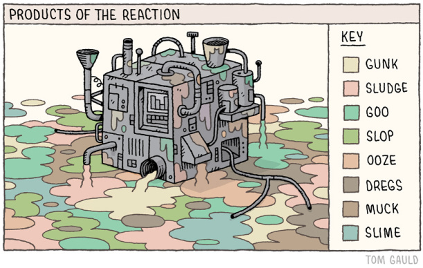
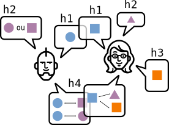
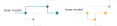
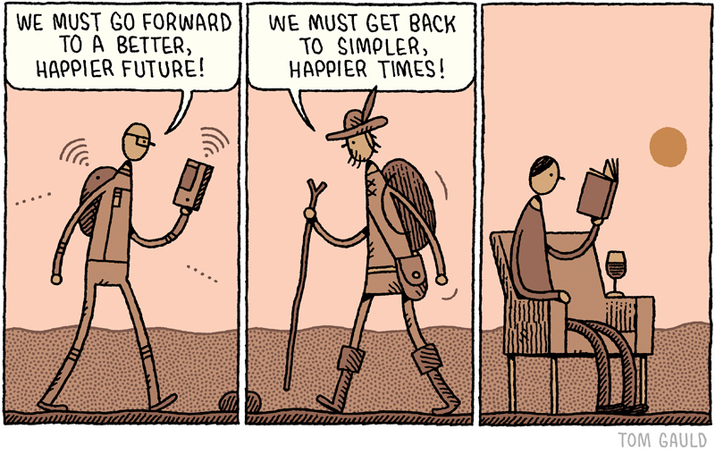
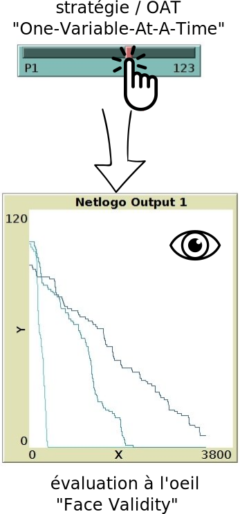
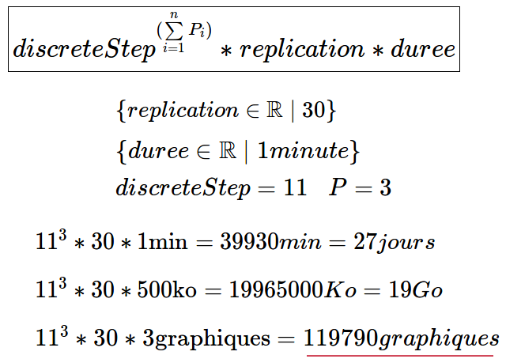
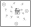
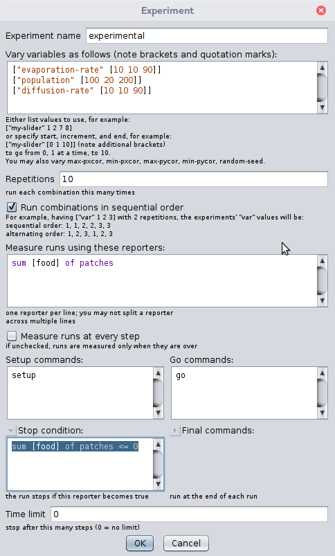
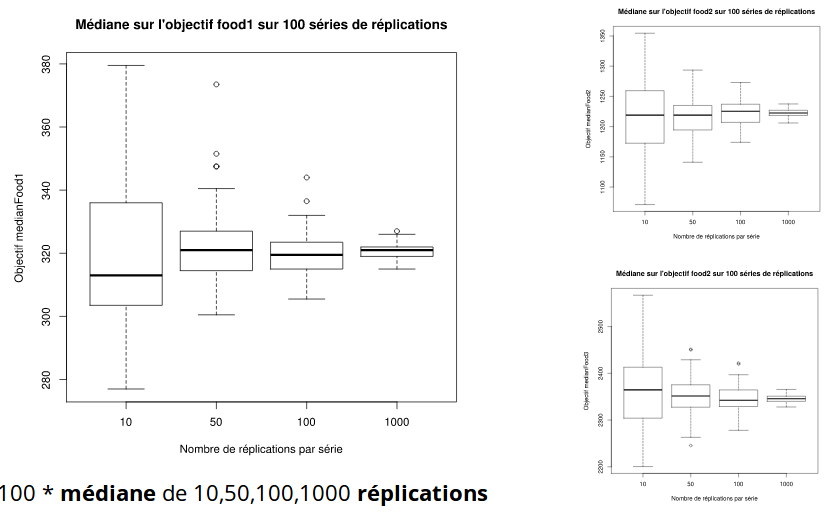
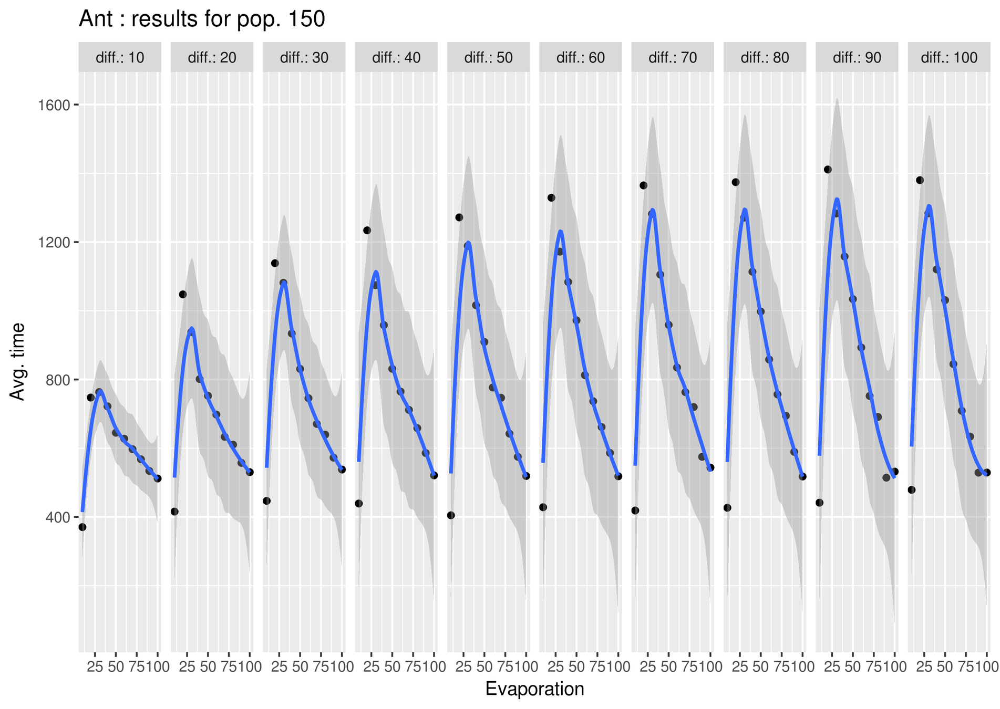

Exploration de modèles multi-agents
Explorer pour discuter
Des conceptions complémentaires de la réalité
Explorer pour faire des choix
connaître et agir sur la dépendance au chemin
Les choix génèrent des chemins conduisant au même pattern

Explorer pour comprendre
le "laboratoire virtuel", un agitateur d'idées mais pas que ...

comportements attendus / simulés ? défaillances ? robustesse(s) ?
Les bénéfices de l'exploration
L'exploration des modèles revient donc à organiser :
- la saine confrontation des points de vue
- la mesure des écarts entre comportements internes attendus et simulés
- la chasse aux bugs et cas limites
Autrement dit, un processus systématique qui stimule l'effet de surprise.
Analyse de sensibilité ?
aproches et problèmes
De quoi on parle ?
“Sensitivity analysis (SA) is used to explore the influence of varying inputs on the outputs of a simulation model” (Ginot et al. 2006).
“By exploring the sensitivity of model output to changes in parameters, we learn about the relative importance of the various mechanisms represented in the model and how robust the model output is to parameter uncertainty.” (Thiele et al. 2014).
- sensibilité locale
- sensibilité globale
sensibilité locale : Comment ?
- +
- ludique
- interactif
- exploratoire
- incrémental
- essai erreur
- -
- peu fiable
- couteux en temps
- limité
- difficilement reproductible
Une première étape pour systématiser OAT
| un modèle simple, un plan d'expérience complet : P1 x P2 x P3 |
Problème n°1 : Explosion combinatoire
Durée & Volumétrie impossible à gérer
Problème n°2 : "Curse Dimensionality"

de dimentions = couverture à nb points égal
Un exemple avec Netlogo
le modèle Ants
Des règles simples
Utilisation de traces ou "phéromones"
Alignement avec les traces les plus fortes
Comportement

Exemple de dynamique

Le BehaviorSpace de Netlogo
cette config produit 4810 simulations
Mesurer la stockasticité
Observer l'effet du nombre de réplications
Chercher dans la donnée
Observer les effets combinés de dépot ET diffusion de phéromones